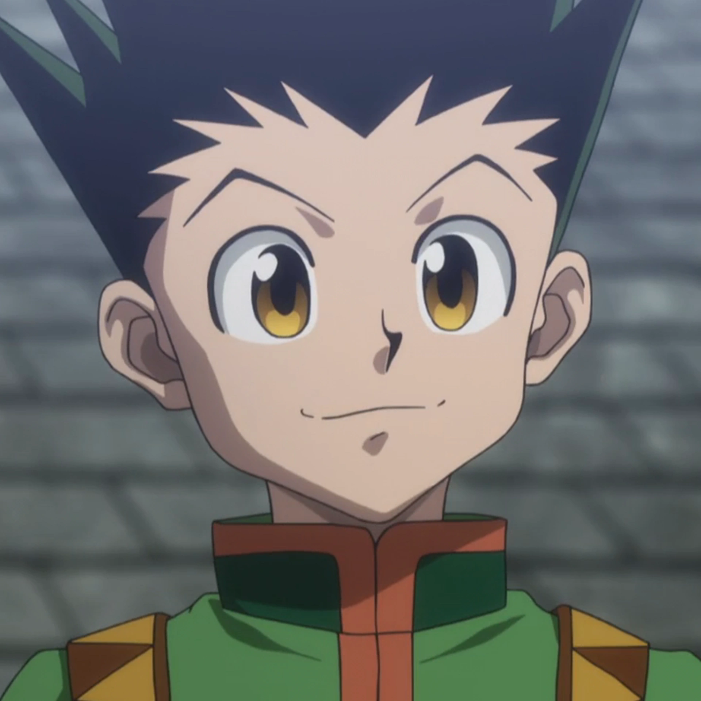

SINOPSE
Sobre
Favoritos
Serviços
Home

Gon Freecss (ゴン=フリークス, Gon Furīkusu) é o protagonista de Hunter x Hunter. Resoluto a fim de encontrar seu pai, Ging Freecss, o jovem tornou-se um Hunter.
Naruto Uzumaki (うずまきナルト, Uzumaki Naruto) é um shinobi de Konohagakure do clã Uzumaki e protagonista homônimo da franquia Naruto.
Ichigo é um humano que nasceu com a capacidade de ver fantasmas, isso eventualmente o levou a se tornar um Shinigami substituto e participar das mais importantes batalhas da Soul Society.